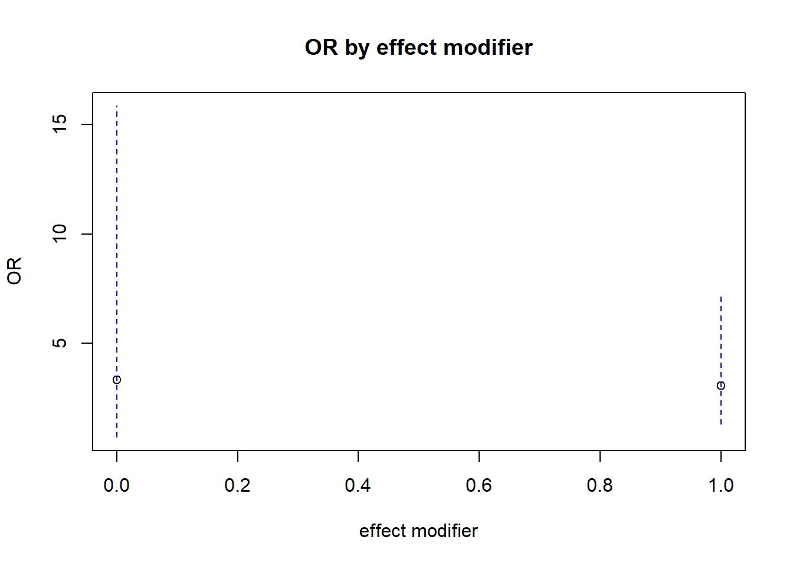

Chapter 14 Results from regression
- Add interaction term in the regression
- check the coef of the interaction terms, and compare that number with the numbers calculated at the previous section (rations and differences): they should be equivalent if not equal
Using regression could help accommodate the following
- covariates could be added
- exposure variable could be continuous covariate
14.1 OR: multiplicative scale
OCdata$alc <- as.factor(OCdata$alc)
OCdata$smk <- as.factor(OCdata$smk)
reg1 = glm(oc~alc*smk, family = binomial(link = 'logit'), data = OCdata)
require(jtools)
reg.res1 <- summ(reg1, exp = TRUE)
reg.res1$coeftable## exp(Est.) 2.5% 97.5% z val. p
## (Intercept) 0.1500000 0.04457383 0.5047805 -3.06413033 0.002183038
## alc1 3.3333333 0.70060657 15.8592734 1.51286779 0.130313246
## smk1 2.9629630 0.68004588 12.9096430 1.44647020 0.148045366
## alc1:smk1 0.9149096 0.15436110 5.4227369 -0.09794692 0.921974441P-values are used to determine significance of the interaction term.
Let us estimate the ORs by effect modifier
require(Publish)
saveres <- publish(reg1)## Variable Units OddsRatio CI.95 p-value
## alc(0): smk(1 vs 0) 2.96 [0.68;12.91] 0.14805
## alc(1): smk(1 vs 0) 2.71 [1.00;7.37] 0.05070
## smk(0): alc(1 vs 0) 3.33 [0.70;15.86] 0.13031
## smk(1): alc(1 vs 0) 3.05 [1.29;7.18] 0.01073saveres## Variable Units OddsRatio CI.95 p-value
## 1 alc(0): smk(1 vs 0) 2.96 [0.68;12.91] 0.14805
## 2 alc(1): smk(1 vs 0) 2.71 [1.00;7.37] 0.05070
## 3 smk(0): alc(1 vs 0) 3.33 [0.70;15.86] 0.13031
## 4 smk(1): alc(1 vs 0) 3.05 [1.29;7.18] 0.01073We can also plot this to check the overlap of CIs visually
plot(c(0,1), saveres$rawTable[3:4,"OddsRatio"], xlab="effect modifier", ylab="OR", main="OR by effect modifier", xlim = c(0,1), ylim = range(saveres$rawTable[3:4,4:5]))
lines(c(0,0), saveres$rawTable[3,c("Lower","Upper")], col="blue", lty=2)
lines(c(1,1), saveres$rawTable[4,c("Lower","Upper")], col="blue", lty=2)
14.2 RD: additive scale
reg2 = glm(oc~alc*smk, family = binomial(link = 'identity'), data = OCdata)
reg.res2 <- summ(reg2, exp = FALSE, confint = TRUE)
reg.res2$coeftable## Est. 2.5% 97.5% z val. p
## (Intercept) 0.13043478 -0.007201192 0.2680708 1.8574176 0.06325177
## alc1 0.20289855 -0.054723418 0.4605205 1.5436333 0.12267719
## smk1 0.17725753 -0.047279102 0.4017942 1.5472681 0.12179861
## alc1:smk1 0.06485671 -0.251754034 0.3814675 0.4014924 0.68805761Convergence is often an issue, and hence the following can be used instead. But for the following, robust standard error estimation is necessary. One disadvantage is that the estimated probabilities could be beyond 0 and 1.
reg3 = glm(oc~alc*smk, family = gaussian, data = OCdata)
reg.res3 <- summ(reg3, exp = FALSE, robust = TRUE, confint = TRUE)
reg.res3$coeftable## Est. 2.5% 97.5% t val. p
## (Intercept) 0.13043478 -0.06858971 0.3294593 1.284503 0.1989662
## alc1 0.20289855 -0.09747536 0.5032725 1.323929 0.1855265
## smk1 0.17725753 -0.09596588 0.4504809 1.271554 0.2035316
## alc1:smk1 0.06485671 -0.29234745 0.4220609 0.355866 0.721940914.3 RR: multiplicative scale
reg4 = glm(oc~alc*smk, family = binomial(link = 'log'), data = OCdata)
reg.res4 <- summ(reg4, exp = TRUE, robust = TRUE)
reg.res4$coeftable## exp(Est.) 2.5% 97.5% z val. p
## (Intercept) 0.1304348 0.04540698 0.3746832 -3.7833464 0.0001547338
## alc1 2.5555556 0.73873564 8.8405972 1.4817478 0.1384074033
## smk1 2.3589744 0.70876768 7.8513175 1.3988837 0.1618478632
## alc1:smk1 0.7318192 0.18575194 2.8831965 -0.4463088 0.6553742276or, alternatively, the following could be used.
reg5 = glm(oc~alc*smk, family = poisson(link = 'log'), data = OCdata)
reg.res5 <- summ(reg5, exp = TRUE, robust = TRUE)
reg.res5$coeftable## exp(Est.) 2.5% 97.5% z val. p
## (Intercept) 0.1304348 0.04207716 0.4043342 -3.5286609 0.000417668
## alc1 2.5555554 0.63925951 10.2162942 1.3270950 0.184477266
## smk1 2.3589742 0.62595502 8.8900305 1.2678745 0.204842758
## alc1:smk1 0.7318192 0.15458224 3.4645596 -0.3935815 0.69389005614.4 Converted estimates from OR
require(interactionR)
reg1 = glm(oc~alc*smk, family = binomial(link = 'logit'), data = OCdata)
table_object = interactionR(reg1, exposure_names = c("alc1", "smk1"), ci.type = "mover", ci.level = 0.95, em=FALSE, recode = FALSE)
table_object$dframe## Measures Estimates CI.ll CI.ul p
## 1 OR00 1.0000000 NA NA NA
## 2 OR01 2.9629630 0.6800459 12.9096430 0.148045366
## 3 OR10 3.3333333 0.7006066 15.8592734 0.130313246
## 4 OR11 9.0361446 2.6413389 30.9130753 0.000483904
## 5 OR(smk1 on outcome [alc1==0] 2.9629630 0.6800459 12.9096430 0.148045366
## 6 OR(smk1 on outcome [alc1==1] 2.7108434 0.9969750 7.3709689 0.050316637
## 7 OR(alc1 on outcome [smk1==0] 3.3333333 0.7006066 15.8592734 0.130313246
## 8 OR(alc1 on outcome [smk1==1] 3.0496988 1.2948765 7.1826638 0.010707090
## 9 Multiplicative scale 0.9149096 0.1543611 5.4227369 0.921974441
## 10 RERI 3.7398483 -11.4297248 21.8721579 NA
## 11 AP 0.4138765 -0.3775073 0.8113231 NA
## 12 SI 1.8704819 0.6460433 5.4155854 NAinteractionR_table(table_object)## Do you want to save a Microsoft Word copy of the em/interaction table to your working directory? (yes/No/cancel)
## a flextable object.
## col_keys: `*`, `smk1 absent`, `smk1 present`, `Effect of smk1 within the strata of alc1`
## header has 1 row(s)
## body has 9 row(s)
## original dataset sample:
## * smk1 absent smk1 present
## 1 <NA> <NA> <NA>
## 2 <NA> OR [95% CI] OR [95% CI]
## 3 alc1 absent 1 [Reference] 2.96 [0.68, 12.91]
## 4 alc1 present 3.33 [0.7, 15.86] 9.04 [2.64, 30.91]
## 5 Effect of alc1 within the strata of smk1 3.33 [0.7, 15.86] 3.05 [1.29, 7.18]
## Effect of smk1 within the strata of alc1
## 1 <NA>
## 2 OR [95% CI]
## 3 2.96 [0.68, 12.91]
## 4 2.71 [1, 7.37]
## 5 <NA>Compare with previously obtained results
saveres## Variable Units OddsRatio CI.95 p-value
## 1 alc(0): smk(1 vs 0) 2.96 [0.68;12.91] 0.14805
## 2 alc(1): smk(1 vs 0) 2.71 [1.00;7.37] 0.05070
## 3 smk(0): alc(1 vs 0) 3.33 [0.70;15.86] 0.13031
## 4 smk(1): alc(1 vs 0) 3.05 [1.29;7.18] 0.01073Also calculate by hand
beta1 <- as.numeric(reg1$coefficients[2])
OR10 <- exp(beta1)
OR10## [1] 3.333333beta2 <- as.numeric(reg1$coefficients[3])
OR01 <- exp(beta2)
OR01## [1] 2.962963beta3 <- as.numeric(reg1$coefficients[4])
OR11 <- exp(beta1 + beta2 + beta3)
OR11## [1] 9.036145RERI <- OR11 - OR10 - OR01 + 1
RERI## [1] 3.739848AP <- RERI / OR11
AP## [1] 0.4138765SI <- (OR11 - 1)/ (OR10 - 1 + OR01 - 1)
SI## [1] 1.870482source("Additive interactions function.R") # Mathur MB & VanderWeele TJ (2018)
additive_interactions(reg1)## Loading required package: msm## Stat Est CI.lo CI.hi p.val.0 p.val.epi
## 1 RERI 3.7398483 -1.83667500 9.3163716 0.09435021 0.2704345
## 2 AP 0.4138765 -0.07306308 0.9008162 0.04786863 NA
## 3 alc1 0.2903548 -0.13508981 0.7157995 0.09050950 NA
## 4 smk1 0.2442668 -0.08791751 0.5764510 0.07475981 NA
## 5 alc1:smk1 0.4653784 -0.10296969 1.0337265 0.05426119 NA
## p.val.suff.cause
## 1 0.1677822
## 2 NA
## 3 NA
## 4 NA
## 5 NA